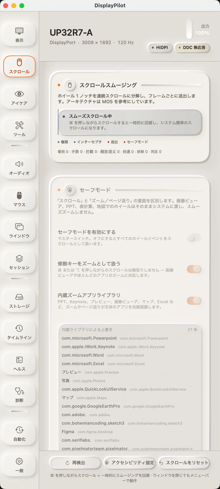

01 · スクロール スムージング
1 ノッチを、ひと続きの動きに
ホイール 1 ノッチは、もう一度のジャンプではありません。イベントをいったん溜め、画面のリフレッシュごとに届けます。各フレームで送出するのは pending × (1 − e^(−dt/τ))。減衰がフレーム数ではなく経過時間で決まるので、60Hz と 144Hz で同じ手触りになります。オフラインのベンチマークでは、120Hz の初回フレームが 3 ポイントから 9 ポイントに向上し、90% 到達時間は 158ms から 133ms に短縮しました。
ターミナルや画像ビューア、スライドのようにホイールを精密入力やズームとして扱うウィンドウは、初期状態でシステムに返します。⌘ を押しながらならいつでもネイティブ スクロールに戻れます。スムージングは初期状態でオフ。オンにしない限りホイールを乗っ取りません。画面上には「検出 / ジェスチャ / 横取り / 送出」の 4 つのリアルタイム カウンターがあり、新しいマウスで問題が出たとき、どの層で止まっているかが一目で分かります。
